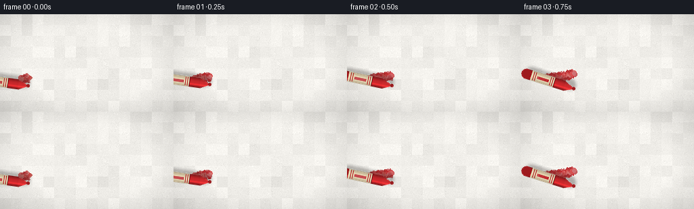
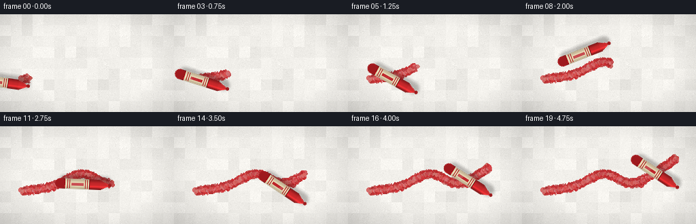

CODING AGENTS AS PIXEL WORLD MODELS
traex/Seed-2.1-Pro-0915 · phygen_033
点击播放 · 原生 RGB 像素
逐轮保存的候选
回放视频、检查图与代码变化。
每份候选均可单独播放。实际图片检查记录在下方工具轨迹中。
候选 01播放与检查图
点击播放 · 原生 RGB 像素


展开代码变化
--- 上一保存版本
+++ 本次保存版本
@@ -0,0 +1,234 @@
+"""Procedural text-to-video: a red crayon drawing on rough white paper.
+
+Renders 20 RGB frames (256x144, 4 fps) with numpy and PIL only.
+The crayon tip follows a smooth wavy path while a grainy wax stroke
+accumulates behind it, with crumbs, contact shadow and paper texture.
+"""
+import math
+from pathlib import Path
+
+import numpy as np
+from PIL import Image, ImageDraw, ImageFilter
+
+import artifact_io
+
+W, H, N, FPS = 256, 144, 20, 4.0
+SEED = 21
+CASE_DIR = Path(__file__).parent
+
+
+# ---------------------------------------------------------------- paper
+def make_paper(rng):
+ """Rough off-white paper: fine grain, fibers, large-scale mottling."""
+ yy, xx = np.mgrid[0:H, 0:W].astype(np.float32)
+ base = np.full((H, W, 3), (242, 240, 235), dtype=np.float32)
+
+ # Large-scale mottling.
+ low = rng.normal(0, 1, (9, 16, 1)).astype(np.float32)
+ low = np.repeat(np.repeat(low, H // 9, axis=0), W // 16, axis=1)
+ low = np.pad(low, ((0, H - low.shape[0]), (0, W - low.shape[1]), (0, 0)), mode="edge")
+ base += low * 4.5
+
+ # Fine grain.
+ base += rng.normal(0, 2.6, (H, W, 1)).astype(np.float32)
+
+ # Short pressed fibers.
+ fiber = Image.new("L", (W, H), 0)
+ fd = ImageDraw.Draw(fiber)
+ for _ in range(900):
+ x, y = rng.uniform(0, W), rng.uniform(0, H)
+ length = rng.uniform(1.5, 6.0)
+ angle = rng.uniform(0, math.pi)
+ shade = int(rng.uniform(8, 26))
+ fd.line(
+ [(x, y), (x + math.cos(angle) * length, y + math.sin(angle) * length)],
+ fill=shade,
+ width=1,
+ )
+ fiber = np.asarray(fiber, dtype=np.float32)[..., None]
+ sign = rng.choice([-1, 1], (H, W, 1)).astype(np.float32)
+ base += sign * fiber * 0.35
+
+ # Gentle corner vignette.
+ vx = (xx - W / 2) / (W / 2)
+ vy = (yy - H / 2) / (H / 2)
+ vignette = 1.0 - 0.10 * np.clip(vx ** 2 + vy ** 2 - 0.55, 0, None)
+ base *= vignette[..., None]
+ return np.clip(base, 0, 255).astype(np.uint8)
+
+
+# ---------------------------------------------------------------- path
+def catmull_rom(points, samples_per_seg=240):
+ """Sample a smooth open path through control points."""
+ pts = [points[0]] + list(points) + [points[-1]]
+ out = []
+ for i in range(len(pts) - 3):
+ p0, p1, p2, p3 = pts[i], pts[i + 1], pts[i + 2], pts[i + 3]
+ for s in range(samples_per_seg):
+ t = s / samples_per_seg
+ t2, t3 = t * t, t * t * t
+ x = 0.5 * ((2 * p1[0]) + (-p0[0] + p2[0]) * t
+ + (2 * p0[0] - 5 * p1[0] + 4 * p2[0] - p3[0]) * t2
+ + (-p0[0] + 3 * p1[0] - 3 * p2[0] + p3[0]) * t3)
+ y = 0.5 * ((2 * p1[1]) + (-p0[1] + p2[1]) * t
+ + (2 * p0[1] - 5 * p1[1] + 4 * p2[1] - p3[1]) * t2
+ + (-p0[1] + 3 * p1[1] - 3 * p2[1] + p3[1]) * t3)
+ out.append((x, y))
+ out.append(points[-1])
+ return np.asarray(out, dtype=np.float32)
+
+
+# ---------------------------------------------------------------- crayon
+def make_crayon_sprite():
+ """Horizontal crayon, tip at left, local +x trails backward."""
+ pad = 8
+ tip_x, cone_len, body_len, half_w = pad, 15, 58, 7
+ length = tip_x + cone_len + body_len
+ sprite = Image.new("RGBA", (length + pad + 4, half_w * 2 + pad * 2 + 6), (0, 0, 0, 0))
+ d = ImageDraw.Draw(sprite)
+ cy = sprite.height // 2 + 2
+
+ # Soft contact shadow, offset down-right.
+ shadow = Image.new("RGBA", sprite.size, (0, 0, 0, 0))
+ sd = ImageDraw.Draw(shadow)
+ sd.rounded_rectangle(
+ [tip_x - 2, cy - half_w + 3, tip_x + cone_len + body_len + 2, cy + half_w + 5],
+ radius=half_w + 1, fill=(20, 15, 12, 70),
+ )
+ shadow = shadow.filter(ImageFilter.GaussianBlur(2.2))
+ sprite.alpha_composite(shadow)
+
+ # Cylindrical shading profile across the body.
+ def shade(red, green, blue, u):
+ curve = 0.62 + 0.38 * math.cos(u * math.pi / 2)
+ hi = 0.28 * math.exp(-((u + 0.45) ** 2) / 0.05)
+ f = curve + hi
+ return (int(min(255, red * f)), int(min(255, green * f)), int(min(255, blue * f)))
+
+ # Wax cone (exposed red tip), worn flat at the very point.
+ cone = [(tip_x, cy), (tip_x + cone_len, cy - half_w), (tip_x + cone_len, cy + half_w)]
+ d.polygon(cone, fill=(196, 38, 40, 255))
+ for px in range(tip_x, tip_x + cone_len):
+ u = (px - tip_x) / cone_len
+ y0, y1 = cy - half_w * u, cy + half_w * u
+ for py in range(int(y0), int(y1) + 1):
+ uu = (py - cy) / max(half_w, 1)
+ d.point((px, py), fill=shade(205, 44, 46, uu) + (255,))
+ d.ellipse([tip_x - 2, cy - 2, tip_x + 2, cy + 2], fill=(150, 28, 30, 255)) # worn tip
+
+ # Wax body.
+ x0, x1 = tip_x + cone_len, tip_x + cone_len + body_len
+ for px in range(x0, x1):
+ for py in range(cy - half_w, cy + half_w + 1):
+ uu = (py - cy) / half_w
+ d.point((px, py), fill=shade(200, 40, 43, uu) + (255,))
+ d.ellipse([x1 - half_w, cy - half_w, x1 + half_w, cy + half_w], fill=(158, 26, 30, 255))
+
+ # Paper wrapper: cream label band with red borders and white stripe.
+ wx0, wx1 = x0 + 16, x1 - 8
+ d.rectangle([wx0, cy - half_w, wx1, cy + half_w], fill=(232, 214, 178, 255))
+ for px in range(wx0, wx1):
+ for py in range(cy - half_w, cy + half_w + 1):
+ uu = (py - cy) / half_w
+ f = 0.78 + 0.22 * math.cos(uu * math.pi / 2)
+ r, g, b = sprite.getpixel((px, py))[:3]
+ d.point((px, py), fill=(int(r * f), int(g * f), int(b * f), 255))
+ for bx in (wx0 + 2, wx0 + 5, wx1 - 6, wx1 - 3):
+ d.line([(bx, cy - half_w + 1), (bx, cy + half_w - 1)], fill=(178, 34, 38, 255))
+ d.rectangle([wx0 + 8, cy - 2, wx1 - 9, cy + 1], fill=(190, 40, 44, 200))
+
+ # Rim where wrapper meets exposed wax.
+ d.line([(x0 + 15, cy - half_w), (x0 + 15, cy + half_w)], fill=(120, 24, 28, 255))
+ return sprite, (tip_x, cy)
+
+
+def paste_crayon(canvas, sprite, tip_anchor, tip_local, angle_deg):
+ rotated = sprite.rotate(angle_deg, resample=Image.BICUBIC, expand=True)
+ theta = math.radians(angle_deg)
+ cx0, cy0 = sprite.width / 2, sprite.height / 2
+ dx, dy = tip_local[0] - cx0, tip_local[1] - cy0
+ rx = dx * math.cos(theta) - dy * math.sin(theta)
+ ry = dx * math.sin(theta) + dy * math.cos(theta)
+ tip_in_rot = (rotated.width / 2 + rx, rotated.height / 2 + ry)
+ top_left = (tip_anchor[0] - tip_in_rot[0], tip_anchor[1] - tip_in_rot[1])
+ canvas.alpha_composite(rotated, (int(round(top_left[0])), int(round(top_left[1]))))
+
+
+# ---------------------------------------------------------------- main
+def main():
+ rng = np.random.default_rng(SEED)
+ paper = make_paper(rng)
+ paper_img = Image.fromarray(paper).convert("RGBA")
+
+ controls = [(34, 96), (78, 88), (120, 70), (162, 84), (200, 66), (226, 48)]
+ path = catmull_rom(controls)
+ tangents = np.gradient(path, axis=0)
+ tangents /= np.linalg.norm(tangents, axis=1, keepdims=True) + 1e-8
+
+ sprite, tip_local = make_crayon_sprite()
+
+ # Persistent layers: wax stroke, crumbs.
+ stroke = Image.new("RGBA", (W, H), (0, 0, 0, 0))
+ sd = ImageDraw.Draw(stroke)
+ crumbs = Image.new("RGBA", (W, H), (0, 0, 0, 0))
+ cd = ImageDraw.Draw(crumbs)
+
+ paper_noise = paper.astype(np.float32).mean(axis=2)
+ frames = []
+ prev_idx = 0
+
+ for fi in range(N):
+ progress = (fi + 1) / N
+ end_idx = max(1, int(len(path) * progress))
+
+ # Deposit wax along the newly covered segment.
+ for j in range(prev_idx, end_idx):
+ x, y = path[j]
+ tx, ty = tangents[j]
+ # Hand pressure wobble.
+ wob = math.sin(j * 0.35) * 0.45 + rng.normal(0, 0.35)
+ radius = 3.1 + wob
+ grain = paper_noise[int(np.clip(y, 0, H - 1)), int(np.clip(x, 0, W - 1))] / 255.0
+ for _ in range(3):
+ ox, oy = rng.normal(0, radius * 0.45, 2)
+ r = radius * rng.uniform(0.55, 1.0)
+ if rng.random() < 0.12: # wax skip on rough tooth
+ continue
+ alpha = int(rng.uniform(150, 225) * (0.85 + 0.15 * grain))
+ red = int(rng.uniform(178, 214))
+ green = int(rng.uniform(28, 46))
+ sd.ellipse([x + ox - r, y + oy - r, x + ox + r, y + oy + r],
+ fill=(red, green, 38, alpha))
+ # Loose wax dust beside the stroke.
+ if rng.random() < 0.5:
+ nx, ny = -ty, tx
+ side = rng.choice([-1, 1])
+ cxp = x + nx * side * rng.uniform(3.5, 6.0) + rng.normal(0, 0.6)
+ cyp = y + ny * side * rng.uniform(3.5, 6.0) + rng.normal(0, 0.6)
+ s = rng.uniform(0.5, 1.3)
+ cd.ellipse([cxp - s, cyp - s, cxp + s, cyp + s],
+ fill=(int(rng.uniform(160, 205)), 30, 34, int(rng.integers(120, 210))))
+ prev_idx = end_idx
+
+ tip = path[end_idx - 1]
+ tan = tangents[end_idx - 1]
+ # Body trails opposite the travel direction.
+ angle = math.degrees(math.atan2(-tan[1], -tan[0]))
+ # Tiny hand tremor.
+ jitter_angle = angle + math.sin(fi * 1.7) * 1.2 + float(rng.normal(0, 0.5))
+ tip_pos = (tip[0] + math.sin(fi * 2.1) * 0.5, tip[1] + math.cos(fi * 1.3) * 0.5)
+
+ frame = paper_img.copy()
+ frame.alpha_composite(stroke)
+ frame.alpha_composite(crumbs)
+ paste_crayon(frame, sprite, tip_pos, tip_local, jitter_angle)
+
+ frames.append(np.asarray(frame.convert("RGB"), dtype=np.uint8))
+
+ frames = np.stack(frames, axis=0)
+ artifact_io.save(frames, CASE_DIR)
+ print(f"Saved {frames.shape[0]} frames at {W}x{H} to {CASE_DIR}")
+
+
+if __name__ == "__main__":
+ main()
可观测工具轨迹
实际执行的命令与返回图片。
命令 1exit 0
/bin/bash -lc 'cat prompt.txt; echo ---; cat GENERATION_RULES.md; echo ---; cat task_spec.json'
命令 2exit 0
/bin/bash -lc 'ls -la; find . -maxdepth 2 -name "*.py" | head; python3 -c "import artifact_io" 2>&1 | head -2'
命令 3exit 0
/bin/bash -lc 'cat artifact_io.py'
命令 4exit 0
/bin/bash -lc 'cd . && time python3 generate.py && ls -la frames | head -6 && ls -la pixels.npz inspection.png index.html'
视觉工具实际返回图片 1

保存候选 1 份；完成命令 4 次；可验证图片返回 1 张。原始 API 响应与完整日志保留在本地。